Ăn Uống
AnDao Coffee & Chocolate
28 Tháng Năm, 2020
Tiệm café có café ngon thì thường ít đẹp
Mà tiệm đẹp thì thường ít có café ngon
Vậy chọn đẹp hay chọn ngon?
Uhmmm sao ta phải chọn trong khi có thể có cả hai nhỉ
AnDao Coffee & Chocolate là một nơi mà bạn có thể có cả 02 trong 01 đấy 😛 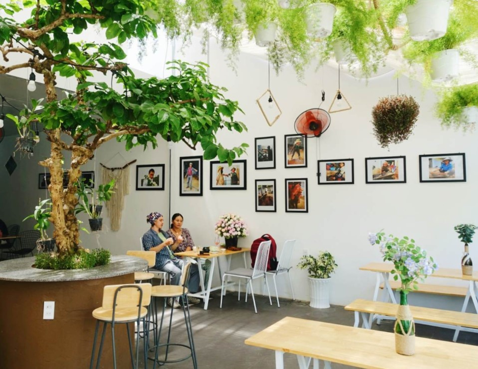 Huy khá là ngạc nhiên khi một quán dễ thương và phục vụ đồ ăn, đồ uống ngon, chất lượng như này lại chưa nổi. Hỏi ra thì mới biết có 02 lí do chính: một là chưa kịp nổi đã vướng vào em Covid-19; hai là anh chị chủ quán kinh doanh hơi…vô tư, kiểu đam mê là chính. Còn về khâu quảng bá thì hầu như không làm gì. Vậy nên hi vọng sau bài này, quán sẽ được mọi người biết đến hơn 🙂
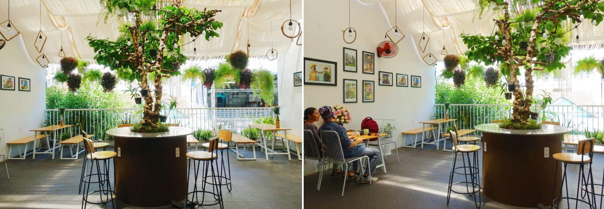
Mà tiệm đẹp thì thường ít có café ngon
Vậy chọn đẹp hay chọn ngon?
Uhmmm sao ta phải chọn trong khi có thể có cả hai nhỉ
AnDao Coffee & Chocolate là một nơi mà bạn có thể có cả 02 trong 01 đấy 😛 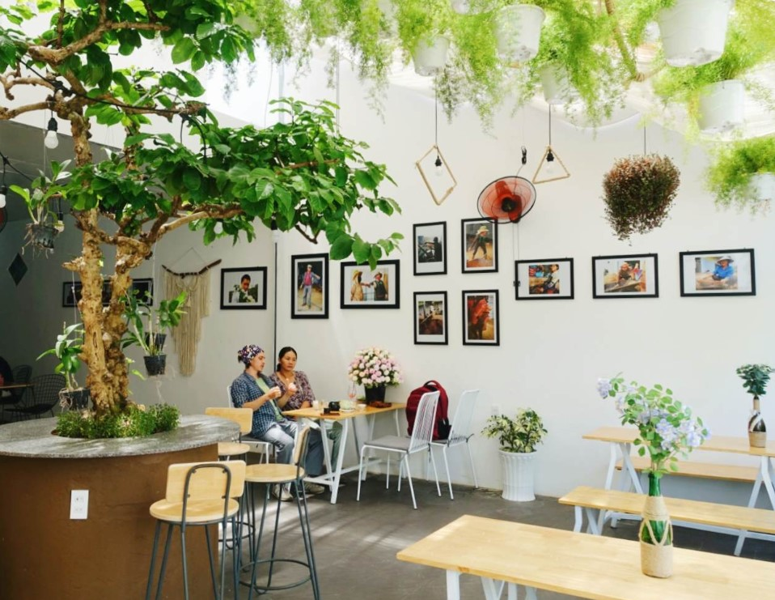 Huy khá là ngạc nhiên khi một quán dễ thương và phục vụ đồ ăn, đồ uống ngon, chất lượng như này lại chưa nổi. Hỏi ra thì mới biết có 02 lí do chính: một là chưa kịp nổi đã vướng vào em Covid-19; hai là anh chị chủ quán kinh doanh hơi…vô tư, kiểu đam mê là chính. Còn về khâu quảng bá thì hầu như không làm gì. Vậy nên hi vọng sau bài này, quán sẽ được mọi người biết đến hơn 🙂
Ba điểm chính H đánh giá cao AnDao là:
– Thức uống đa dạng;
– Thức ăn ngon vừa vị;
– Quán xinh xắn, đáng yêu, mát mắt và không bị quá xô bồ.
Ngoài ra nếu bạn là người sành café thì H tiết lộ luôn, chủ ở đây – anh An là người có tiếng trong mảng café ở Nha Trang, từng đoạt giải 03 cuộc thi rang xay năm 2018. Tên quán cũng chính là tên anh, An là tên, Đào là họ, thành quán có tên AnDao. H có nghe một người bạn kể lại, anh học về kỹ thuật ở Nga, thông thạo Anh Ngữ lẫn Nga Ngữ. Vậy mà không hiểu sao về Việt Nam quay qua làm mảng F&B, kể cũng hay ha 😀
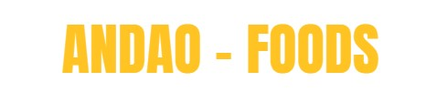
H đến quán đa phần là vào buổi sáng và thử qua vài món khá phổ biến với người Việt như là bò kho, cà ri gà và bánh mì chảo…
Bò kho ở AnDao thì có mùi thơm nhẹ thôi chứ không nồng nàn mùi hồi, quế như một số chỗ. Vị khá ngon và hợp với H, không quá mặn cũng không quá nhạt, lại còn ngọt và béo nhẹ. Kết hợp với bánh mì tí hon tự quán làm rất chi là hợp. H ăn ít nên chỉ ăn hai “ổ” là bắt đầu no.
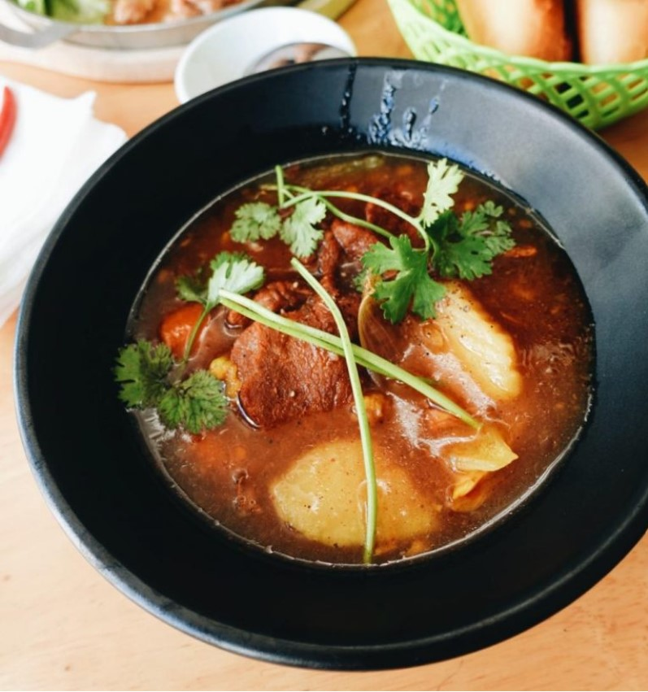
Cà ri gà và bò kho sẽ được thay đổi luân phiên trong thực đơn để chiều lòng thực khách. H đến hai ngày liên tiếp nên may mắn thưởng thức được cả hai. Thịt gà trong tô cà ri mềm, thấm vị được nấu cùng với khoai tây, khoai lang, cà rốt. Nước cà ri đậm đà và béo nhẹ, độ sánh vừa phải. Có điều mùi cài ri rất nhẹ, H thì thích mùi cà ri đậm thêm xíu nữa cho thơm.
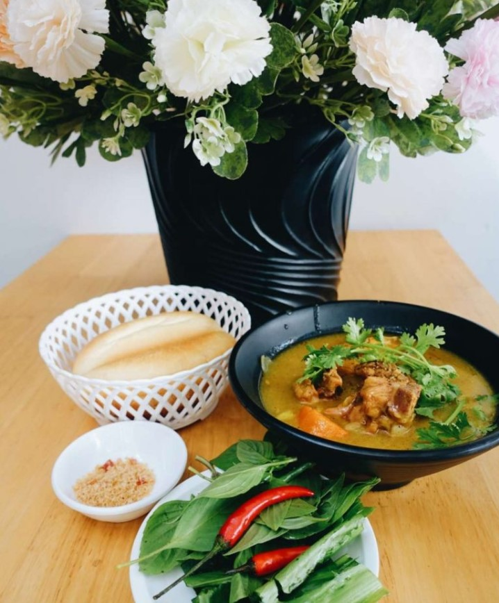
Một món khác mà H muốn review là bánh mì chảo bao gồm trong đó là xúc xích, pate và một loại nước sốt đặc biệt của quán. Sau khi ăn xong thì H kết nhất cái pate. Pate AnDao sử dụng là pate nhà làm theo kiểu Âu nên không có thịt xay bên trong. Gan được sử dụng là gan gà chứ không phải gan heo nên béo hơn rất nhiều, chưa kể còn đượm mùi bơ nữa. Ăn chung với bánh mì thì thôi ta nói… muốn tan chảy. Trong pate còn có tiêu xay thơm thơm nữa. H nhiệt tình vote cho cái pate này
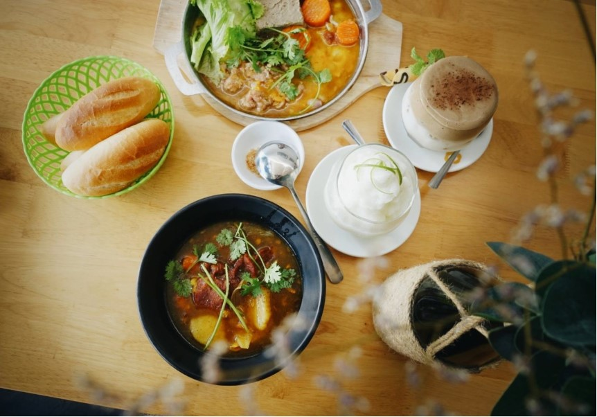
Ngoài ra AnDao Cafe còn nổi tiếng với món bánh mì chua – một loại bánh mì truyền thống của người Châu Âu. Loại bánh này có lớp vỏ màu nâu đen, dày, giòn và phủ thêm ít mè hoặc quinoa. Phần ruôt có kết cấu rất đặc và khi ăn có vị chua nhẹ. Vị chua này là từ con men dùng để làm bánh (men này quán tự nuôi). Từ lúc đụng tay vô nguyên vật liệu tới khi ra được thành phẩm thì mất tầm khoảng 30h. Theo H tìm hiểu thì những loại bánh làm từ men tự nhiên như này rất tốt cho sức khỏe và tiêu hóa.
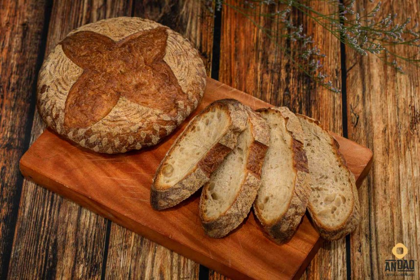
Món này H ăn không hợp lắm nhưng lại là một trong những món signature của Andao. Đây là địa chỉ quen của các bạn Tây khi muốn mua bánh mì chua để ăn. H thấy thi thoảng lại có người đến mua nguyên ổ lớn mang về. Vậy nên nếu bạn là người không ngại thử món mới, món lạ thì cứ mạnh dạn order bánh mì chua nha (bán theo ổ hoặc phần) biết đâu sẽ thích thì sao 😛
Ngoài ra H còn thử thêm bánh mì phô mai bơ tỏi và bánh Coconut Mousse. Bánh mì được phục vụ lúc còn nóng và có lớp vỏ ngoài nâu vàng óng ả, mỏng nhẹ giòn tan. Bên trong đầy ắp phô mai béo ngậy. Nói chung rất ổn. Giá còn mềm hơn cả một số nơi bán online nữa đó 😀
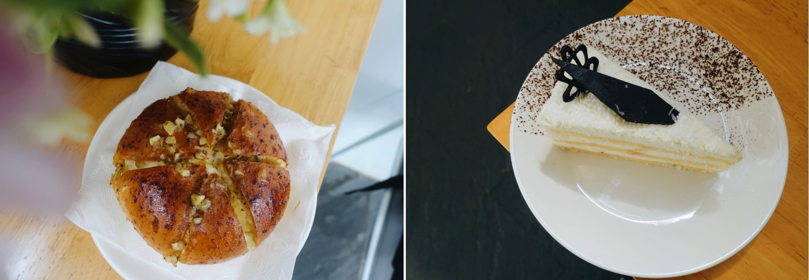
– Thức uống đa dạng;
– Thức ăn ngon vừa vị;
– Quán xinh xắn, đáng yêu, mát mắt và không bị quá xô bồ.
Ngoài ra nếu bạn là người sành café thì H tiết lộ luôn, chủ ở đây – anh An là người có tiếng trong mảng café ở Nha Trang, từng đoạt giải 03 cuộc thi rang xay năm 2018. Tên quán cũng chính là tên anh, An là tên, Đào là họ, thành quán có tên AnDao. H có nghe một người bạn kể lại, anh học về kỹ thuật ở Nga, thông thạo Anh Ngữ lẫn Nga Ngữ. Vậy mà không hiểu sao về Việt Nam quay qua làm mảng F&B, kể cũng hay ha 😀
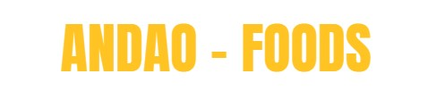
H đến quán đa phần là vào buổi sáng và thử qua vài món khá phổ biến với người Việt như là bò kho, cà ri gà và bánh mì chảo…
Bò kho ở AnDao thì có mùi thơm nhẹ thôi chứ không nồng nàn mùi hồi, quế như một số chỗ. Vị khá ngon và hợp với H, không quá mặn cũng không quá nhạt, lại còn ngọt và béo nhẹ. Kết hợp với bánh mì tí hon tự quán làm rất chi là hợp. H ăn ít nên chỉ ăn hai “ổ” là bắt đầu no.
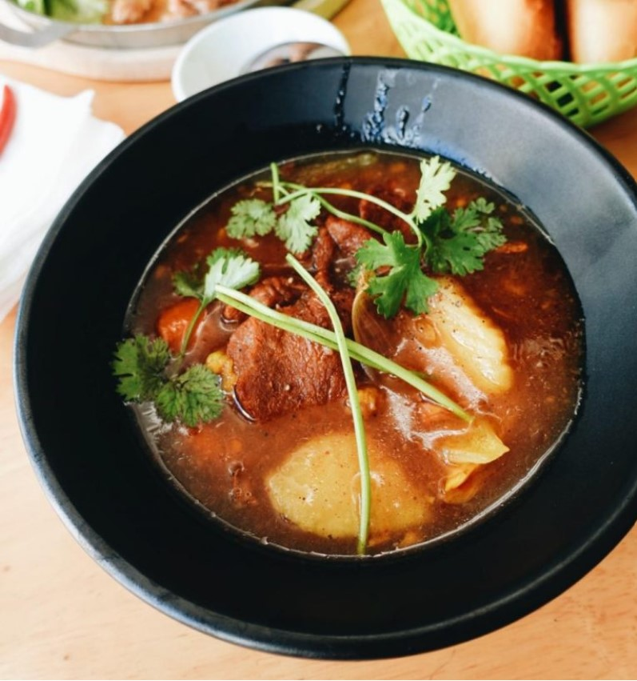
Cà ri gà và bò kho sẽ được thay đổi luân phiên trong thực đơn để chiều lòng thực khách. H đến hai ngày liên tiếp nên may mắn thưởng thức được cả hai. Thịt gà trong tô cà ri mềm, thấm vị được nấu cùng với khoai tây, khoai lang, cà rốt. Nước cà ri đậm đà và béo nhẹ, độ sánh vừa phải. Có điều mùi cài ri rất nhẹ, H thì thích mùi cà ri đậm thêm xíu nữa cho thơm.
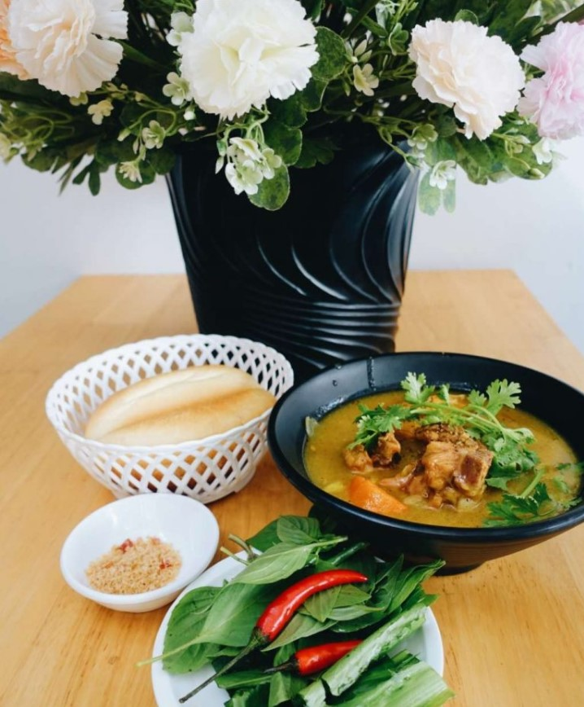
Một món khác mà H muốn review là bánh mì chảo bao gồm trong đó là xúc xích, pate và một loại nước sốt đặc biệt của quán. Sau khi ăn xong thì H kết nhất cái pate. Pate AnDao sử dụng là pate nhà làm theo kiểu Âu nên không có thịt xay bên trong. Gan được sử dụng là gan gà chứ không phải gan heo nên béo hơn rất nhiều, chưa kể còn đượm mùi bơ nữa. Ăn chung với bánh mì thì thôi ta nói… muốn tan chảy. Trong pate còn có tiêu xay thơm thơm nữa. H nhiệt tình vote cho cái pate này
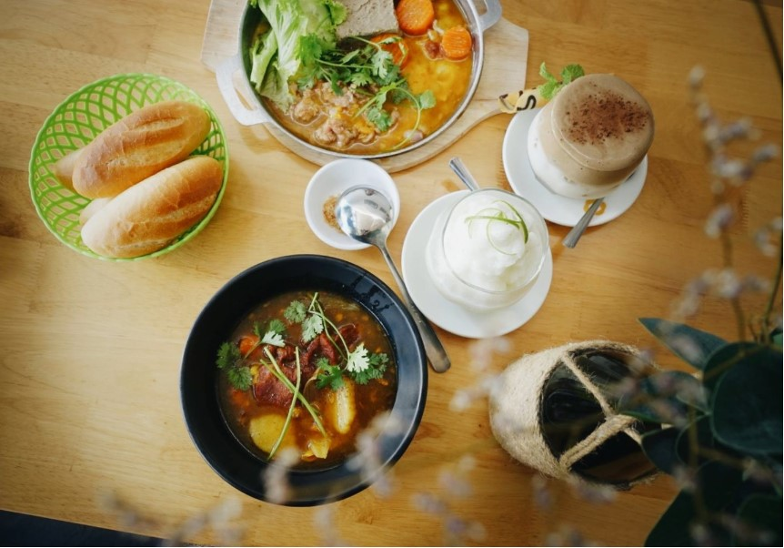
Ngoài ra AnDao Cafe còn nổi tiếng với món bánh mì chua – một loại bánh mì truyền thống của người Châu Âu. Loại bánh này có lớp vỏ màu nâu đen, dày, giòn và phủ thêm ít mè hoặc quinoa. Phần ruôt có kết cấu rất đặc và khi ăn có vị chua nhẹ. Vị chua này là từ con men dùng để làm bánh (men này quán tự nuôi). Từ lúc đụng tay vô nguyên vật liệu tới khi ra được thành phẩm thì mất tầm khoảng 30h. Theo H tìm hiểu thì những loại bánh làm từ men tự nhiên như này rất tốt cho sức khỏe và tiêu hóa.
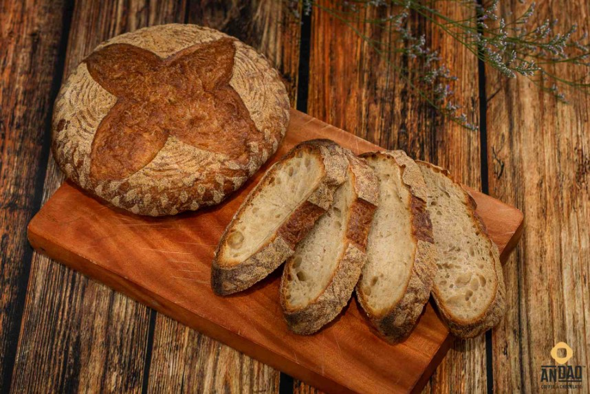
Món này H ăn không hợp lắm nhưng lại là một trong những món signature của Andao. Đây là địa chỉ quen của các bạn Tây khi muốn mua bánh mì chua để ăn. H thấy thi thoảng lại có người đến mua nguyên ổ lớn mang về. Vậy nên nếu bạn là người không ngại thử món mới, món lạ thì cứ mạnh dạn order bánh mì chua nha (bán theo ổ hoặc phần) biết đâu sẽ thích thì sao 😛
Ngoài ra H còn thử thêm bánh mì phô mai bơ tỏi và bánh Coconut Mousse. Bánh mì được phục vụ lúc còn nóng và có lớp vỏ ngoài nâu vàng óng ả, mỏng nhẹ giòn tan. Bên trong đầy ắp phô mai béo ngậy. Nói chung rất ổn. Giá còn mềm hơn cả một số nơi bán online nữa đó 😀
Riêng về bánh Coconut Mousse thì ta nói cực phẩm. Bánh được phục vụ lạnh, mỗi layer trong miếng bánh cho thực khách mỗi tầng cảm xúc khác nhau. Miếng bánh có vẻ ngoài tao nhã, khi ăn thì hương vị bay bổng: ngọt nhẹ nhàng, béo thanh thoát. Trời ơi, chỉ với 35k thì khó có thể kiếm được ở đâu ra một miếng bánh ngon hơn 😀

Mấy nay hơi nóng nên lựa chọn tuyệt vời nhất theo H là chanh tuyết. Nghe tên thôi đã thấy mát lạnh hết cả người rồi ha 😈 . Món này giải khát tốt, không những vị đậm đà, mùi thanh mát mà lại còn có vẻ ngoài đáng yêu.
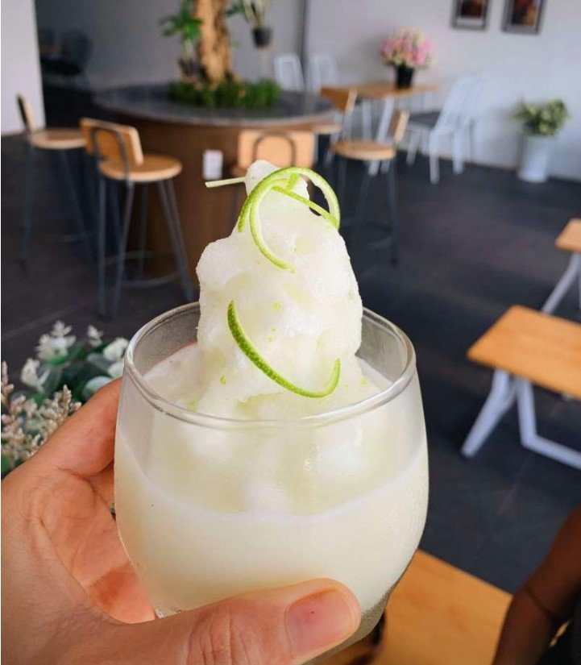
Còn nếu thích trendy thì hãy gọi Dalgona. AnDao có 03 loại là Dalgona Coffee – Dalgona Cocoa – Dalgona Matcha. Trong hình Dalgona Matcha. Một lưu ý nhỏ cho các bạn là nếu đã uống Dalgona thì không nên ăn bánh mì phô mai bơ tỏi và ngược lại. Cơ bản vì cả hai đều rất béo nên nếu kết hợp sẽ khiến bạn cảm thấy nhanh ngấy nha.
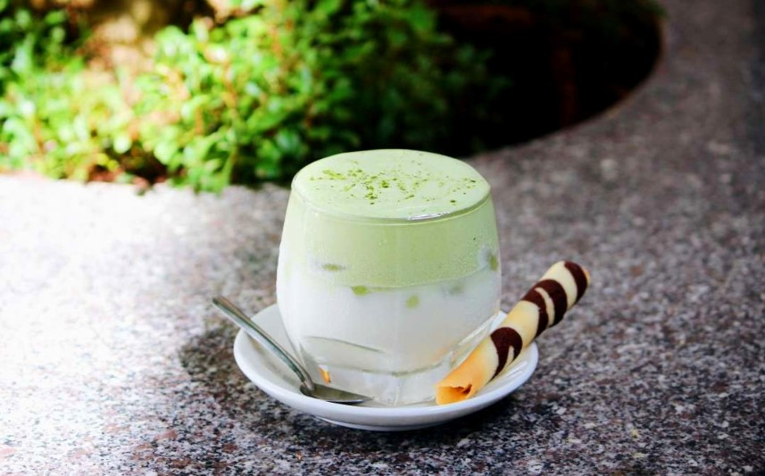
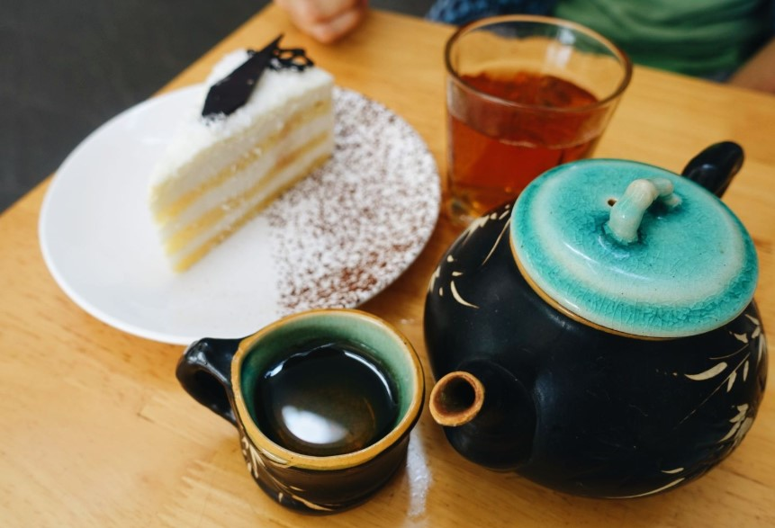
Ngoài ra còn uống thêm nước ép dưa hấu và nước trà nữa nè kakaka
– Order tại tầng trệt và thanh toán luôn khi order;
– Tầng 02 thì nhân viên phục vụ hơi ít xuất hiện nên nếu cần gì thì siêng xuống lầu xíu ha;
– Quán ngoài các món thức uống, món ăn no, bánh ngọt thì còn có các món ăn chơi, pizza… Các bạn tham khảo menu mới nhất bên dưới nhé.
AnDao có 02 tầng. Tầng dưới chia làm hai không gian, có máy lạnh và không có máy lạnh. Tầng 02 thì mở hoàn toàn nên rất thoáng đãng. Khu vực này vừa được trang trí lại nên xanh mướt màu cây cỏ. Vừa nhìn vào là có cảm tình liền, như mấy hình ở đầu bài H có chia sẻ. Còn dưới đây là hình ở tầng trệt nè.
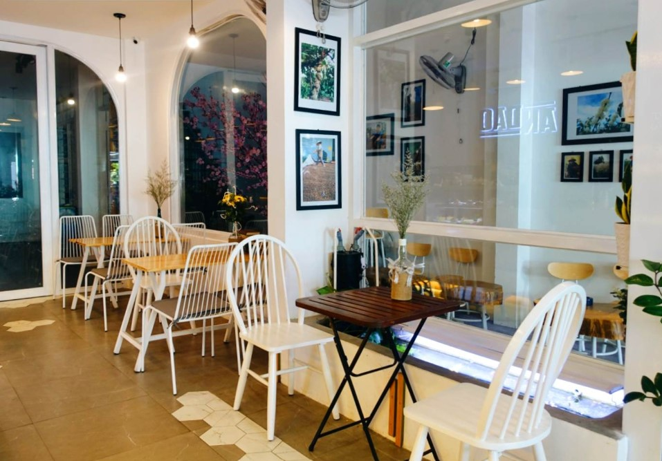
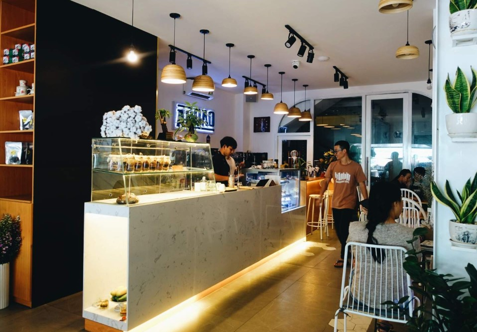
Quán sẽ mở cửa từ 6h30 đến 21h30 mỗi ngày để chờ đón mọi người đó 😛
ANDAO COFFEE & CHOCOLATE
– Địa chỉ: 41 Đống Đa, Nha Trang (mở cửa từ 6h30 đến 21h30)
– Hotline: 076 555 2308
– Fanpage: fb.com/andaocoffeechocolate/
(Lưu ý: Review được thực hiện vào tháng 05/ 2020)
Mấy nay hơi nóng nên lựa chọn tuyệt vời nhất theo H là chanh tuyết. Nghe tên thôi đã thấy mát lạnh hết cả người rồi ha 😈 . Món này giải khát tốt, không những vị đậm đà, mùi thanh mát mà lại còn có vẻ ngoài đáng yêu.
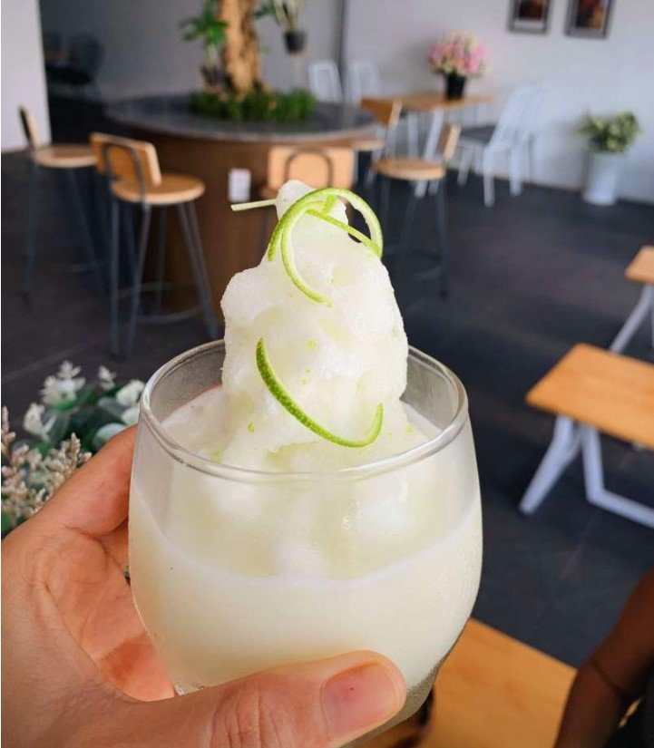
Còn nếu thích trendy thì hãy gọi Dalgona. AnDao có 03 loại là Dalgona Coffee – Dalgona Cocoa – Dalgona Matcha. Trong hình Dalgona Matcha. Một lưu ý nhỏ cho các bạn là nếu đã uống Dalgona thì không nên ăn bánh mì phô mai bơ tỏi và ngược lại. Cơ bản vì cả hai đều rất béo nên nếu kết hợp sẽ khiến bạn cảm thấy nhanh ngấy nha.
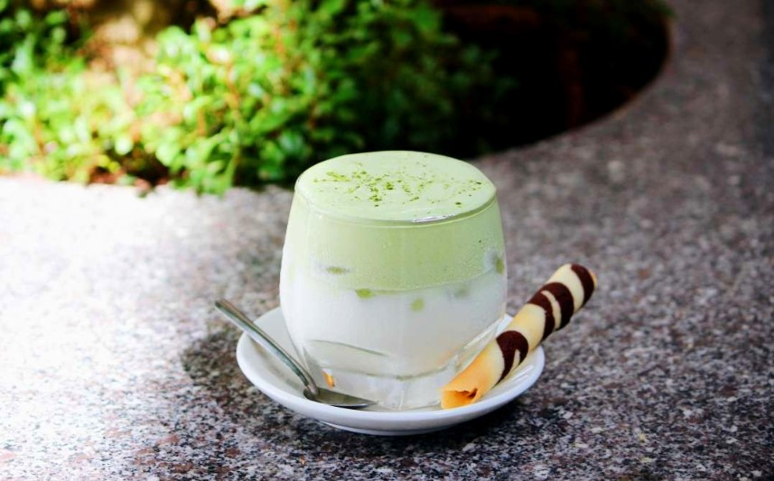
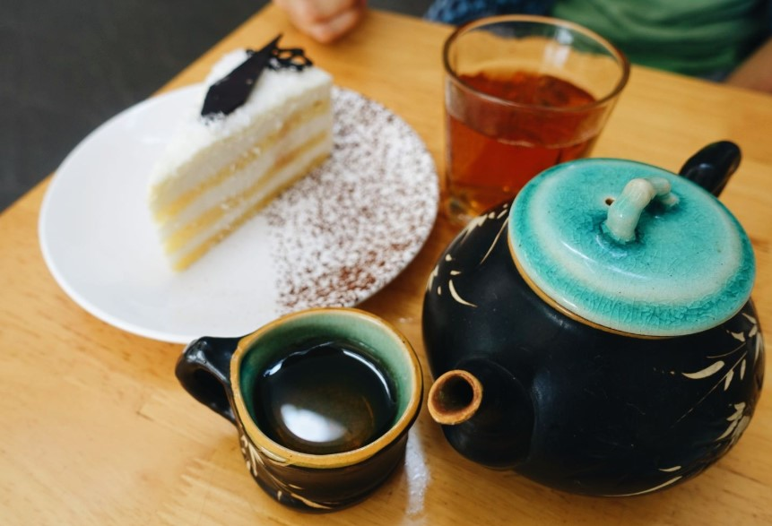
Ngoài ra còn uống thêm nước ép dưa hấu và nước trà nữa nè kakaka
Một số lưu ý khác khi dùng dịch vụ tại AnDao Cafe:
– Quán không phục vụ trà đá như các quán thông thường. Nhưng sẽ có nước lọc đóng bình. Bạn nào cần thì nhờ nhân viên phục vụ lấy thêm li và có thể tự rót uống;– Order tại tầng trệt và thanh toán luôn khi order;
– Tầng 02 thì nhân viên phục vụ hơi ít xuất hiện nên nếu cần gì thì siêng xuống lầu xíu ha;
– Quán ngoài các món thức uống, món ăn no, bánh ngọt thì còn có các món ăn chơi, pizza… Các bạn tham khảo menu mới nhất bên dưới nhé.
Menu mới nhất của AnDao Coffee & Chocolate
AnDao có 02 tầng. Tầng dưới chia làm hai không gian, có máy lạnh và không có máy lạnh. Tầng 02 thì mở hoàn toàn nên rất thoáng đãng. Khu vực này vừa được trang trí lại nên xanh mướt màu cây cỏ. Vừa nhìn vào là có cảm tình liền, như mấy hình ở đầu bài H có chia sẻ. Còn dưới đây là hình ở tầng trệt nè.
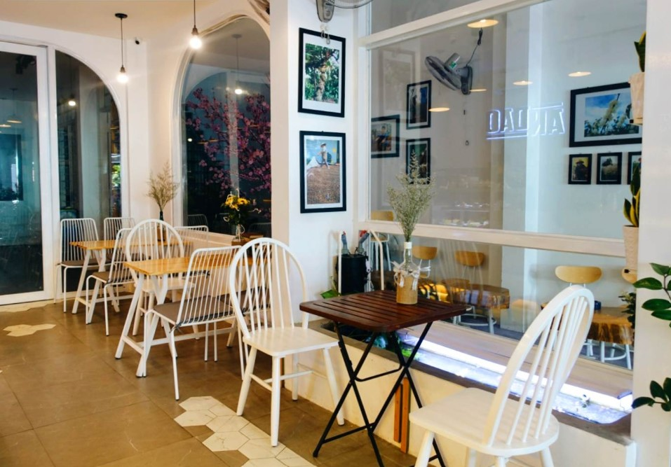
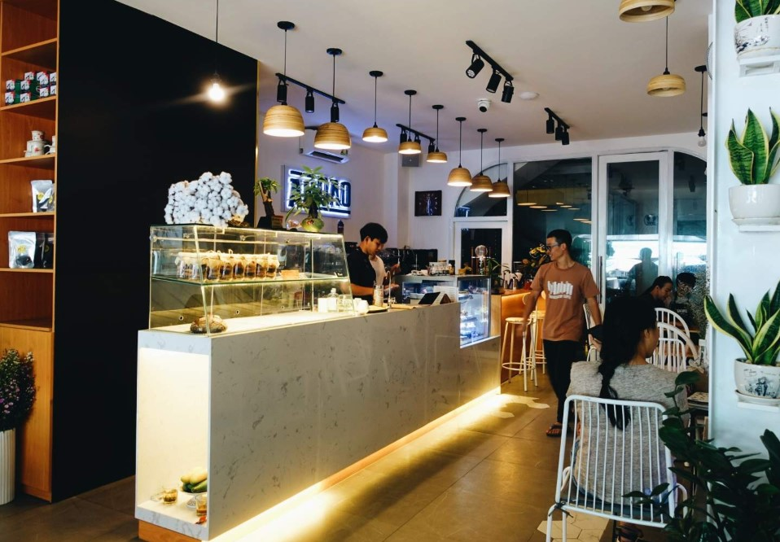
Quán sẽ mở cửa từ 6h30 đến 21h30 mỗi ngày để chờ đón mọi người đó 😛
ANDAO COFFEE & CHOCOLATE
– Địa chỉ: 41 Đống Đa, Nha Trang (mở cửa từ 6h30 đến 21h30)
– Hotline: 076 555 2308
– Fanpage: fb.com/andaocoffeechocolate/
(Lưu ý: Review được thực hiện vào tháng 05/ 2020)